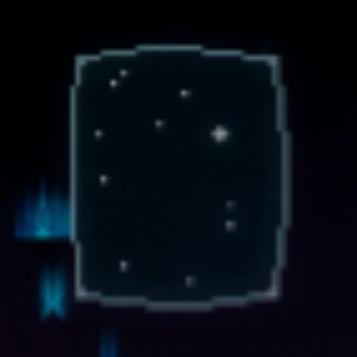
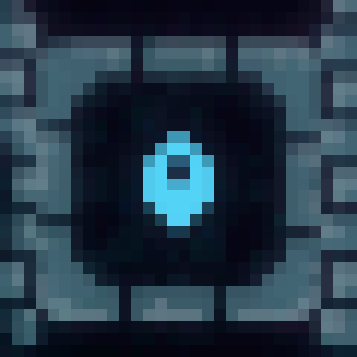
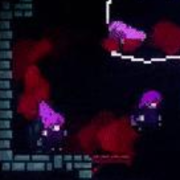

Mustad, kosmilised plokid, mis pikendavad mängija sööstu, kuni ta on plokist väljas. Kui ploki taga pole ruumi, kui mängija lendab välja plokist, sureb mängija. Ploki sisse minemine, annab mängijale hoo laengu tagasi.
Madeline ärkab ja avastab, et mägi paljastab oma häiriva olemuse. Ta leiab salapärase kambri, kus on aheldatud keegi tuttav.

Mustad, kosmilised plokid, mis pikendavad mängija sööstu, kuni ta on plokist väljas. Kui ploki taga pole ruumi, kui mängija lendab välja plokist, sureb mängija. Ploki sisse minemine, annab mängijale hoo laengu tagasi.

Puudutades kilbi sümboliga mulli, aktiveerib eraldi kilbi ploki, mis tavaliselt paneb selle liikuma. Kilbi plokk liigub tagasi oma algsesse positsiooni, kui ta on liikumise lõpetanud.

Kuri kloon mängijast, mis kopeerib mängija tegevusi, aga umbes kolme sekundilise viivitusega. Klooni puudutamine tapab mängija. Kui on mitu klooni, siis nende vahel on umbes sekundiline viivitus.